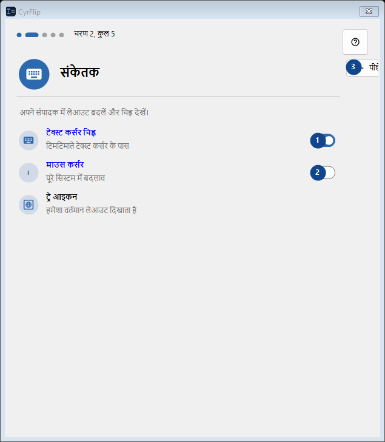
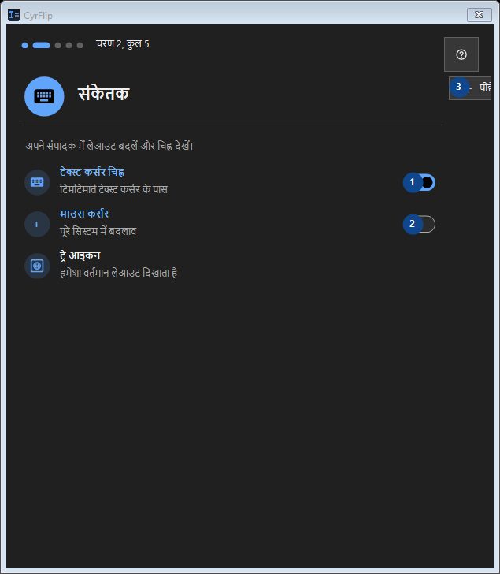

संकेतक
इसका उपयोग
क्रमांकित विवरण पढ़ें, आवश्यक मान चुनें और विंडो के आदेश से आगे बढ़ें।


उपयोग का क्रम
क्रमांकित विवरण पढ़ें, आवश्यक मान चुनें और विंडो के आदेश से आगे बढ़ें।
तत्व
1. टेक्स्ट कर्सर चिह्न
चालू
आपके शॉर्टकट2. माउस कर्सर
बंद
आपके शॉर्टकट3. पीछे
बताई गई कार्रवाई के लिए इस आदेश का उपयोग करें। स्वीकार करने से पहले पुष्टि पढ़ें।
आपके शॉर्टकट4. आगे
बताई गई कार्रवाई के लिए इस आदेश का उपयोग करें। स्वीकार करने से पहले पुष्टि पढ़ें।
आपके शॉर्टकट5. छोड़ें
बताई गई कार्रवाई के लिए इस आदेश का उपयोग करें। स्वीकार करने से पहले पुष्टि पढ़ें।
आपके शॉर्टकट